Além da sala de aula: áreas de atuação para licenciados em Física
Seminários Integrados
Objetivos
Ao final desta aula, devemos ser capazes de:
- reconhecer competências transferíveis desenvolvidas em uma Licenciatura em Física;
- relacionar essas competências a setores que vão além da docência no Ensino Médio;
- distinguir possibilidade de atuação, qualificação complementar e habilitação legal;
- investigar áreas como ciência de dados, Física Médica, Biofísica, ciências forenses, econofísica e geociências;
- ler criticamente uma vaga ou edital, sem supor que todo diploma de Física dá acesso automático a toda função;
- construir um plano inicial de formação e um projeto de portfólio.
Problema de pesquisa
Uma pessoa licenciada em Física está preparada apenas para dar aulas no Ensino Médio ou sua formação pode abrir outras rotas profissionais? Quais competências já vêm da graduação, quais precisam ser aprofundadas e quais carreiras dependem de edital, residência, certificação ou registro específico?
A resposta curta é: a licenciatura não é uma prisão profissional, mas também não é um passe automático para qualquer cargo que use Física. Modelar fenômenos, analisar dados, programar, medir, estimar incertezas e explicar ideias complexas são capacidades valiosas em muitos setores. A entrada concreta, porém, depende da descrição da vaga e das regras profissionais vigentes.
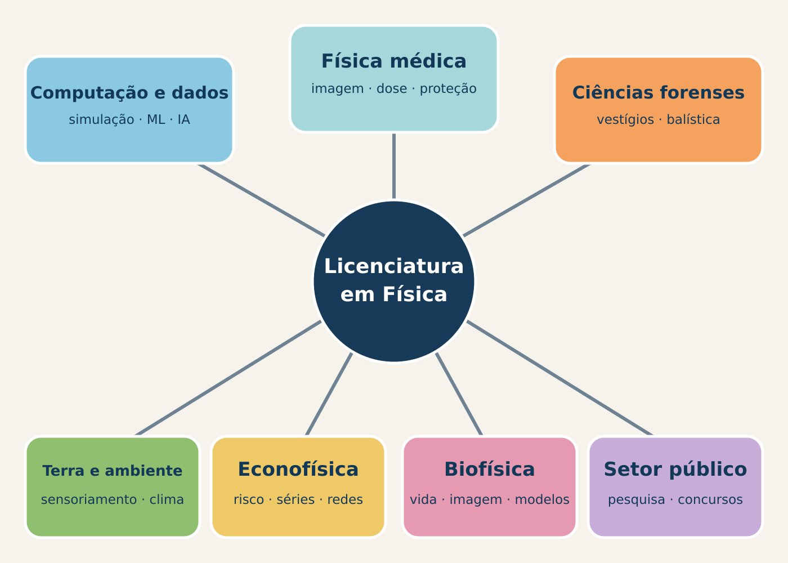
O que a formação em Física ensina a fazer?
Antes de listar profissões, convém identificar o que um curso de Física treina. Mesmo quando duas instituições têm matrizes curriculares diferentes, aparecem com frequência:
- modelagem: transformar uma situação real em variáveis, relações e hipóteses;
- matemática e estatística: calcular, estimar, comparar e quantificar incertezas;
- experimentação: medir, calibrar, controlar variáveis e avaliar erros;
- computação: automatizar cálculos, simular sistemas e analisar dados;
- resolução de problemas: decompor uma pergunta grande em etapas testáveis;
- comunicação: explicar conceitos, construir visualizações e adaptar a linguagem ao público;
- aprendizagem autônoma: estudar ferramentas novas a partir de documentação e evidências.
A licenciatura acrescenta uma competência especialmente útil: traduzir assuntos difíceis sem apagar sua complexidade. Isso importa em equipes técnicas, treinamento, divulgação científica, documentação, atendimento especializado e liderança.
Competências comportamentais e profissionais
Além da capacidade técnica e do raciocínio quantitativo, a experiência em uma instituição federal de ensino pode criar oportunidades para desenvolver competências comportamentais. Elas não surgem automaticamente com o diploma: dependem da participação do estudante em aulas, laboratórios, estágios, iniciação científica, extensão, monitoria, projetos coletivos e representação estudantil.
- comunicação e escuta ativa: apresentar resultados, acolher perguntas e ajustar a explicação a públicos diferentes;
- trabalho em equipe: dividir responsabilidades, colaborar com pessoas de formações distintas e negociar decisões;
- resiliência: aprender com resultados inesperados, reprovações de hipóteses e dificuldades sem abandonar o processo;
- atuação sob pressão: priorizar tarefas e manter rigor diante de prazos, avaliações, falhas experimentais ou demandas simultâneas;
- autonomia e iniciativa: buscar fontes confiáveis, aprender ferramentas novas e propor caminhos para problemas abertos;
- organização e responsabilidade: registrar procedimentos, cumprir compromissos e cuidar de equipamentos, dados e segurança;
- pensamento crítico: questionar premissas, reconhecer limites e não confundir opinião com evidência;
- adaptabilidade: transitar entre teoria, experimento, computação, ensino e contextos profissionais novos;
- ética e compromisso público: considerar segurança, inclusão, impacto social, integridade científica e uso responsável de recursos;
- convivência com a diversidade: trabalhar respeitosamente com diferentes trajetórias, identidades, áreas de conhecimento e perspectivas.
Saber lidar com pressão não significa aceitar sobrecarga permanente ou ambientes abusivos. A competência desejável é organizar-se, comunicar riscos, pedir apoio quando necessário e preservar a qualidade do trabalho e a saúde.
Três camadas de uma transição de carreira
Uma forma segura de planejar a carreira é separar três camadas.
- Base comum: aquilo que a graduação já desenvolveu.
- Ponte: o aprendizado adicional demonstrado por disciplina optativa, iniciação científica, estágio, curso, portfólio, pós-graduação ou residência.
- Regra de entrada: o que a vaga, o edital ou a profissão exige formalmente.
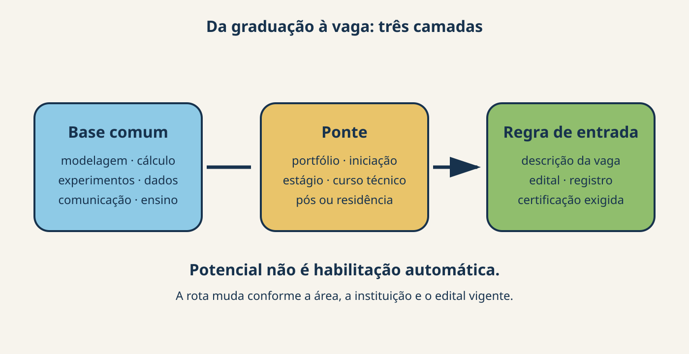
Essa distinção evita dois erros. O primeiro é pensar “sou licenciado, portanto só posso lecionar”. O segundo é pensar “estudei Física, portanto já estou habilitado para qualquer atividade técnica”. O caminho real está entre esses extremos.
Nas próximas seções, cada área será observada com o mesmo roteiro: o que se faz, quais competências da Física são transferíveis, qual ponte formativa pode ser necessária e como aparece a empregabilidade em São Paulo. As possibilidades apresentadas são caminhos a investigar, não promessas de contratação ou habilitação automática.
As referências salariais de mercado usadas a seguir foram consultadas em novembro de 2026 e se baseiam em salários-base de vínculos CLT registrados no Novo CAGED nos 12 meses anteriores. A média descreve os vínculos da amostra; o chamado piso de referência é uma estimativa estatística do portal, não um piso legal nem garantia de salário inicial. Os valores são nacionais, não incluem benefícios, bônus, bolsas ou trabalho como pessoa jurídica e devem ser comparados junto com jornada, experiência, localidade e requisitos da vaga.
Física computacional, ciência de dados, machine learning e IA
O que há de Física nessa área?
Físicos aprendem a construir modelos, trabalhar com dados ruidosos e verificar se uma explicação faz sentido. Em computação científica, isso aparece na simulação de sistemas; em ciência de dados, na extração de padrões; em aprendizado de máquina, no ajuste e na avaliação de modelos.
Possíveis funções incluem analista ou cientista de dados, desenvolvedor científico, analista de modelagem, pesquisador em IA, engenheiro de machine learning e profissional de visualização. O nome do cargo varia muito e não existe garantia de contratação apenas pelo diploma.
Empregabilidade em São Paulo. A possibilidade é ampla: a capital concentra empresas de tecnologia, bancos, seguradoras, consultorias e startups; Campinas, São Carlos e São José dos Campos possuem polos tecnológicos e universidades. Também há análise de dados no poder público, em instituições como Fundação Seade e IPT. A ponte mais valorizada tende a ser programação, estatística, SQL e portfólio.
Referência salarial (Brasil, 2026). Para o cargo de cientista de dados, o salário-base médio era de R$ 10.356 e o piso de referência, de R$ 6.554, em amostra de 2.276 vínculos e jornada média de 42 horas semanais. É uma referência do cargo concreto, não de toda atividade com IA ou computação.
Conhecimentos para construir a ponte
- Python e SQL; Git e linha de comando;
- NumPy, pandas, Matplotlib e scikit-learn;
- probabilidade, estatística e álgebra linear;
- limpeza de dados e construção de variáveis;
- validação, métricas, sobreajuste e comunicação de incerteza;
- ética, privacidade e vieses em sistemas algorítmicos.
O curso do ICMC-USP indicado nas referências é um exemplo da proximidade entre Física, sistemas complexos, ciência de dados e IA: combina rigor matemático, análise de dados e prática em Python. Isso mostra uma rota possível, não uma credencial obrigatória.
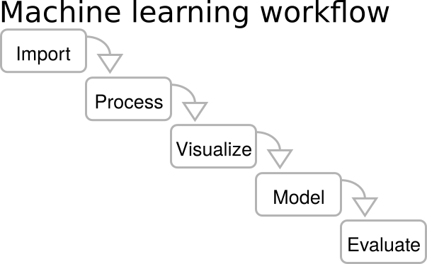
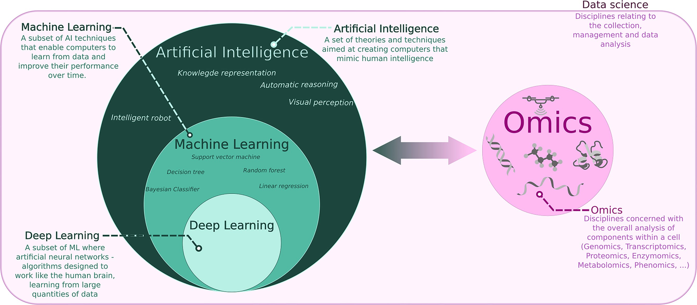
Um primeiro projeto de portfólio
Em vez de começar tentando “criar uma inteligência artificial”, podemos fazer uma pergunta verificável: prever consumo de energia, classificar eventos de um sensor, detectar anomalias meteorológicas ou estimar o movimento de um sistema. Um bom projeto mostra o ciclo inteiro, inclusive onde o modelo falha.
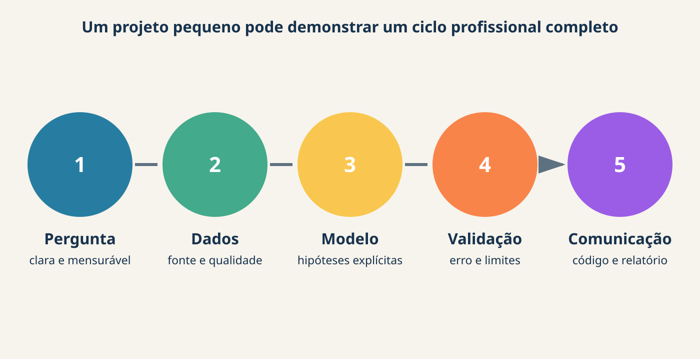
Física Médica
A Física Médica aplica conceitos de radiação, imagem, dosimetria e instrumentação à saúde. Três campos aparecem com frequência:
- radioterapia: planejamento e verificação de doses usadas no tratamento;
- radiodiagnóstico: qualidade e otimização de imagens de raios X, mamografia e tomografia;
- medicina nuclear: uso diagnóstico e terapêutico de radiofármacos, incluindo sistemas PET e SPECT;
- proteção radiológica: segurança de pacientes, trabalhadores e público.
O trabalho é interdisciplinar e envolve grande responsabilidade. Não se resume a “operar máquinas”: inclui controle de qualidade, avaliação de dose, testes, documentação e decisões que afetam a segurança.
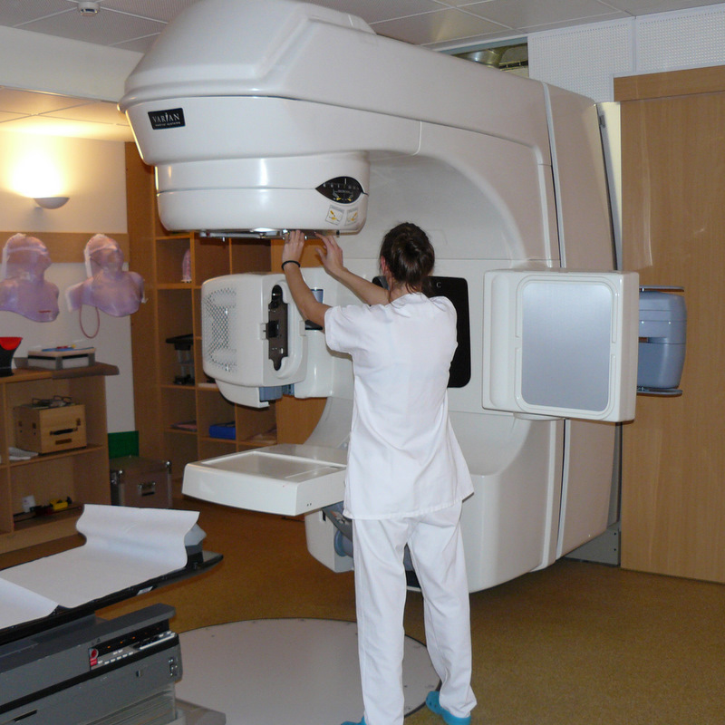
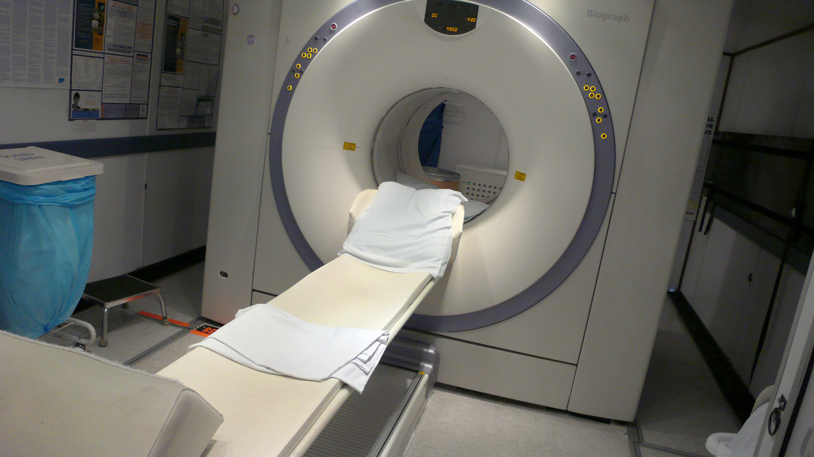
A licenciatura pode ser uma porta de entrada?
Sim, em rotas específicas. A residência multiprofissional em Física Médica do INCA informa como pré-requisito graduação em Física, licenciatura ou bacharelado, e oferece ênfases em radioterapia e imagem. Isso não significa que o diploma sozinho habilite a pessoa a responder tecnicamente por um serviço. Funções de especialista ou supervisor podem exigir residência ou especialização, treinamento clínico e certificação/registro da CNEN conforme a atividade.
Portanto, o roteiro é: verificar o programa de formação desejado, estudar Física das radiações e dosimetria, buscar experiência supervisionada e consultar as normas atualizadas da CNEN e da vigilância sanitária.
Empregabilidade em São Paulo. A possibilidade é especializada. Hospitais, centros oncológicos, clínicas de imagem e medicina nuclear existem na capital e no interior. O estado abriga formações e serviços como os complexos HC-FMUSP/ICESP e instituições em Campinas, Ribeirão Preto, Botucatu e São José do Rio Preto. Residência, treinamento clínico e requisitos da CNEN podem ser indispensáveis.
Referência salarial (Brasil, 2026). Para físico médico, o salário-base médio era de R$ 9.868 e o piso de referência, de R$ 4.688, em amostra de apenas 79 vínculos e jornada média de 39 horas. A amostra pequena e as diferenças entre radioterapia, imagem, medicina nuclear e níveis de certificação recomendam cautela.
Física forense, perícia e área policial
A Física pode ajudar a reconstruir eventos a partir de vestígios. Exemplos:
- estimar velocidade e dinâmica de colisões;
- analisar trajetórias, impactos e fenômenos de balística;
- examinar áudio, vídeo, imagens, iluminação e sombras;
- caracterizar materiais, resíduos, fraturas e incêndios;
- usar metrologia, estatística e propagação de incertezas em laudos.
É importante evitar a imagem televisiva do perito que “resolve tudo sozinho”. A perícia real segue cadeia de custódia, procedimentos documentados, limites instrumentais e trabalho interdisciplinar. Uma conclusão deve ser sustentada pelos vestígios, não por uma narrativa atraente.
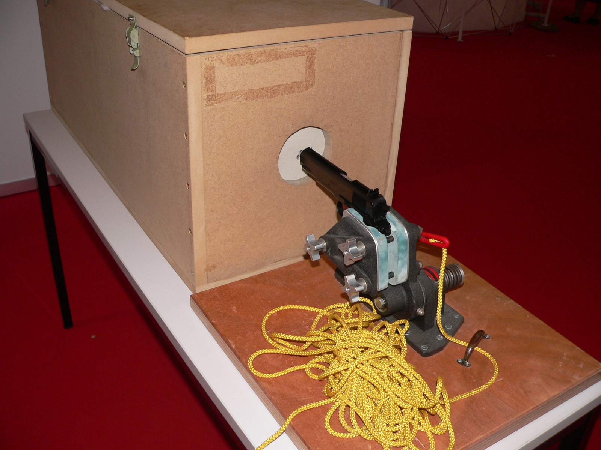
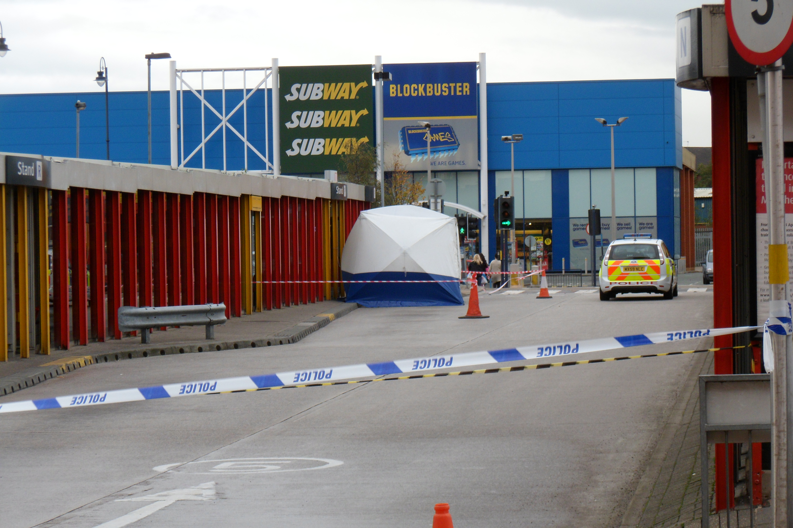
Concurso e requisitos
O edital da Polícia Federal de 2025 incluiu Perito Criminal Federal – Área 16: Física Forense. A própria PF esclarece que graduados em licenciatura podem ingressar em perícia quando o curso está entre as graduações previstas, sempre observando o edital. Em outros cargos da PF e na carreira de policial rodoviário federal, a exigência pode ser graduação de nível superior reconhecida pelo MEC, além das demais etapas e condições.
Na Polícia Rodoviária Federal (PRF), a carreira de policial rodoviário federal exige diploma de curso superior completo reconhecido pelo MEC, sem restringir a graduação à Física, além de CNH ao menos na categoria B e aprovação nas demais fases previstas. Portanto, uma pessoa licenciada em Física pode concorrer. Sua formação pode ajudar na interpretação quantitativa de acidentes, velocidades, distâncias de frenagem, trajetórias, medições, gráficos e dados de fiscalização. Isso não cria uma especialidade automática de “físico da PRF”: o aprovado assume as atribuições policiais gerais, precisa da preparação física, jurídica e operacional exigida e pode ser lotado em qualquer unidade da Federação conforme o concurso.
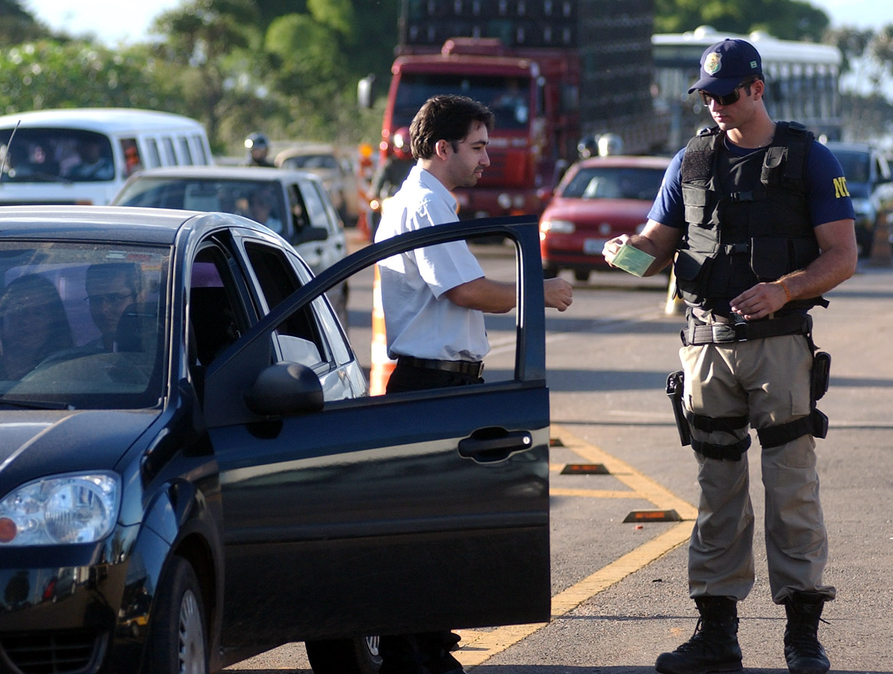
As regras mudam de um concurso para outro. “Qualquer graduação” nunca deve ser lido como “apenas apresentar o diploma”: podem existir prova, investigação social, avaliação médica, psicológica e física, habilitação para dirigir, curso de formação e lotação nacional. Para perícias estaduais, cada estado publica seus próprios requisitos.
O caso da licenciatura em Física na perícia paulista
No Mandado de Segurança Coletivo nº 1061470-50.2023.8.26.0053, impetrado pela Sociedade Brasileira de Física contra a comissão do concurso de Perito Criminal PC 01/2023, a 11ª Vara de Fazenda Pública de São Paulo concedeu a segurança para permitir que físicos licenciados participassem de todas as fases e, se aprovados, tomassem posse. A sentença, de 4 de dezembro de 2023, fundamentou-se na Lei Complementar Estadual nº 494/1986 e na Lei Federal nº 13.691/2018, que inclui a realização de perícias entre as atribuições do físico e não restringe essa profissão ao bacharel. Consulte a sentença integral.
O TJSP já havia mantido decisões favoráveis em casos individuais semelhantes: Apelação Cível nº 1000435-02.2017.8.26.0053, 3ª Câmara de Direito Público, julgada em 4/12/2018, e Apelação Cível nº 1047606-18.2018.8.26.0053, 6ª Câmara de Direito Público, julgada em 18/3/2019. Nesses precedentes, a exigência exclusiva de bacharelado em Física foi considerada desarrazoada diante da lei que rege o cargo.
Essas decisões são evidência jurídica importante, mas não substituem a leitura do edital vigente nem garantem ingresso automático. O candidato ainda precisa cumprir todas as etapas do concurso; se um futuro edital repetir a restrição, seu alcance deverá ser conferido e eventual controvérsia exigirá orientação jurídica adequada.
Empregabilidade em São Paulo. A possibilidade ocorre principalmente por concurso: a Superintendência da Polícia Técnico-Científica mantém unidades na capital e no interior. A Física também pode aparecer em perícia judicial, análise de acidentes, áudio, imagem e consultoria técnica, observadas habilitação, experiência e cadastro exigidos. No caso da PRF, há atuação nas rodovias federais que atravessam o estado, mas o concurso é nacional e a lotação inicial em São Paulo não é garantida.
Referência salarial (carreira pública). Não há amostra CLT suficiente para uma média confiável de perito criminal. Como parâmetros de ingresso, o edital federal de 2025 informou R$ 26.800 para Perito Criminal Federal e a tabela paulista consultada em 2026 indicava R$ 14.962,34 para Perito Criminal de 3ª Classe. Para PRF, o subsídio inicial previsto a partir de maio de 2026 era R$ 12.253,84. São valores brutos de carreiras e editais específicos.
Econofísica, finanças e análise de risco
Econofísica usa ideias e métodos de sistemas complexos, processos estocásticos, redes e séries temporais para investigar fenômenos econômicos e financeiros. No mercado de trabalho, uma pessoa com formação em Física pode encontrar atividades de modelagem quantitativa, risco, dados, detecção de fraude, precificação e automação.
Há uma diferença importante entre pesquisar sistemas econômicos e recomendar investimentos. Um modelo pode identificar correlações, regimes ou anomalias sem conseguir prever o mercado de forma estável. Retornos mudam no tempo, agentes reagem aos modelos e o passado não garante o futuro.
Uma ponte responsável inclui:
- séries temporais, probabilidade e processos estocásticos;
- otimização, cálculo numérico e simulação de Monte Carlo;
- fundamentos de economia, contabilidade e produtos financeiros;
- programação, bases de dados e validação fora da amostra;
- regulação, ética e gestão de risco.
O valor da Física está no raciocínio quantitativo, não em prometer uma “fórmula infalível” para ganhar dinheiro.
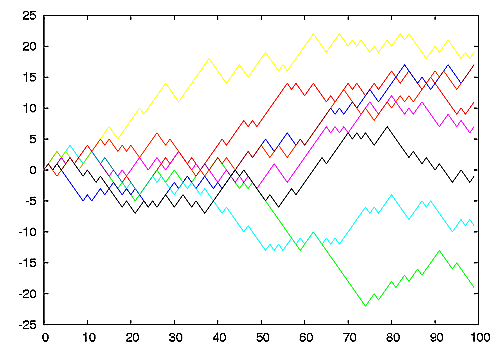
Empregabilidade em São Paulo. A possibilidade é ampla, mas competitiva. A Região Metropolitana concentra bancos, corretoras, seguradoras, fintechs, consultorias e a B3. São comuns funções de risco, modelagem quantitativa, fraude e ciência de dados. Conhecimento financeiro, programação e estatística aplicada são normalmente mais visíveis para o recrutador que o rótulo “econofísica”.
Referência salarial (Brasil, 2026). Analista de riscos apresentava salário-base médio de R$ 5.915 e piso de referência de R$ 3.542, em 6.063 vínculos. Para analista financeiro em instituições financeiras, a média era de R$ 4.961 e o piso de referência, de R$ 3.365, em 49.488 vínculos. Funções quantitativas especializadas podem ter remuneração e bônus diferentes; por isso, “econofísico” não deve ser tratado como um cargo salarial único.
Geofísica, sensoriamento remoto, clima e meteorologia
A Física também permite estudar a Terra e a atmosfera. Algumas frentes são:
- geofísica: métodos sísmicos, gravimétricos, magnéticos e elétricos para investigar o subsolo;
- sensoriamento remoto e geoprocessamento: imagens de satélite, mapas, localização e mudança de uso do solo;
- oceanografia e climatologia: circulação, balanço de energia, séries ambientais e modelos;
- meteorologia: observação, previsão numérica e análise da atmosfera;
- riscos naturais: secas, enchentes, deslizamentos, incêndios e sistemas de alerta;
- energia e ambiente: recursos hídricos, solar, eólica e monitoramento ambiental.
“Geolocalização” é apenas uma parte possível; o campo inclui instrumentação, inversão de dados e modelagem. Também é preciso distinguir área de interesse de título profissional: vagas de geofísico ou meteorologista podem exigir graduação específica, registro ou atribuições profissionais. O licenciado pode entrar por pesquisa, pós-graduação, dados geoespaciais ou cargos compatíveis, mas deve conferir as condições de cada função.
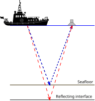
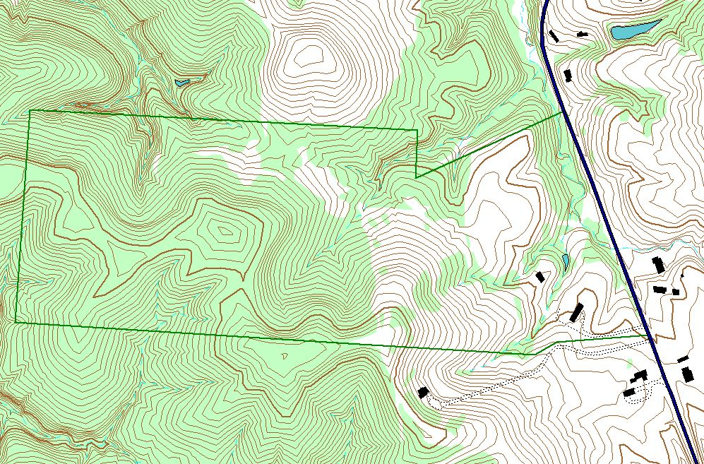
Empregabilidade em São Paulo. A possibilidade é especializada. O eixo São José dos Campos–Cachoeira Paulista reúne INPE e Cemaden, com atividades de sensores, computação, modelagem, geofísica espacial, meteorologia e desastres naturais. IPT, empresas de geotecnologia, energia, agronegócio e consultorias ambientais ampliam o campo. Algumas vagas exigem formação ou atribuição profissional específica.
Referência salarial (Brasil, 2026). Para o cargo formal de geofísico, o salário-base médio era de R$ 17.153 e o piso de referência, de R$ 11.614, em amostra de 168 vínculos e jornada média de 41 horas. O valor não se transfere automaticamente a sensoriamento remoto, geoprocessamento ou meteorologia, e a vaga de geofísico pode exigir graduação ou atribuição profissional específica.
Biofísica: a Física dos sistemas vivos
A Biofísica aplica mecânica, termodinâmica, eletromagnetismo, óptica, Física Estatística e computação a fenômenos biológicos. Ela investiga sistemas em diferentes escalas, desde proteínas e membranas celulares até tecidos, organismos e populações. Por isso, não é sinônimo de Física Médica: há interseções, mas a Biofísica também está presente em pesquisa básica, biotecnologia, indústria farmacêutica, instrumentação e análise de dados biológicos.
Algumas frentes de atuação e pesquisa são:
- biomecânica: forças, movimento humano, tecidos, próteses e reabilitação;
- biofotônica e bioimagem: microscopia, espectroscopia, lasers e processamento de imagens;
- eletrofisiologia e neurofísica: potenciais de membrana, sinais neurais e modelos de redes;
- Biofísica molecular: estrutura de proteínas, interações moleculares e dinâmica de membranas;
- Biofísica computacional: simulação, modelagem matemática e análise de dados biológicos;
- biossensores e instrumentação: desenvolvimento e teste de dispositivos para medir processos biológicos.
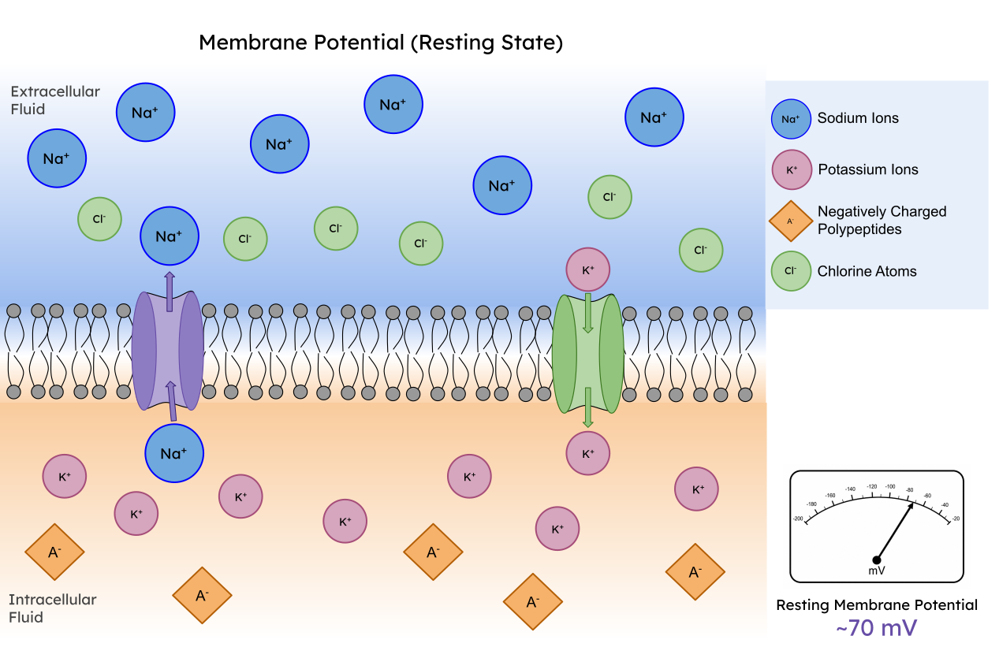
Uma pessoa licenciada em Física pode contribuir em laboratórios de pesquisa, empresas de biotecnologia, instrumentação científica, processamento de imagens e modelagem, desde que construa a ponte necessária. Biologia celular, bioquímica, programação, estatística, técnicas de microscopia, análise de sinais, biossegurança e ética em pesquisa são complementos frequentes. Iniciação científica e pós-graduação são rotas especialmente importantes para atividades de pesquisa.
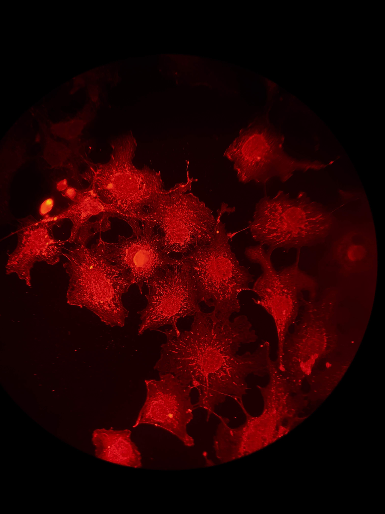
Assim como na Física Médica, é preciso separar pesquisa e desenvolvimento de atividades clínicas regulamentadas. Saber modelar ou operar um instrumento em laboratório não concede automaticamente habilitação para diagnóstico, atendimento ou responsabilidade técnica em uma profissão da saúde. A vaga, o ambiente de trabalho e as normas aplicáveis devem ser verificados.
Empregabilidade em São Paulo. A possibilidade é especializada e fortemente ligada à pesquisa. Campinas reúne o CNPEM e seus laboratórios nacionais; capital, Campinas, Ribeirão Preto, São Carlos e Botucatu possuem universidades, hospitais, Butantan, empresas farmacêuticas, biotecnologia e instrumentação. Iniciação científica, técnicas laboratoriais, análise de imagens e pós-graduação costumam ser pontes relevantes.
Referência salarial (Brasil, 2026). Não há uma série robusta e única para “biofísico”. Como comparação aproximada, biotecnologista apresentava salário-base médio de R$ 6.501 e piso de referência de R$ 4.359, em 231 vínculos e jornada média de 41 horas. Pesquisa acadêmica, análise de bioimagens, indústria farmacêutica e instrumentação usam cargos e regimes diferentes; a comparação não substitui a análise da vaga.
Indústria, instrumentação, energia e tecnologia
Outras rotas frequentemente esquecidas são laboratórios de calibração e ensaios, metrologia, óptica e fotônica, materiais, semicondutores, acústica, energia, automação, desenvolvimento de sensores e suporte técnico especializado. Nelas, o profissional pode testar equipamentos, tratar sinais, elaborar procedimentos, analisar falhas ou treinar equipes.
Empresas valorizam resultados demonstráveis. Um projeto experimental bem documentado, um circuito com aquisição de dados, uma simulação validada ou um relatório de incerteza pode fazer mais diferença que apenas listar disciplinas cursadas.
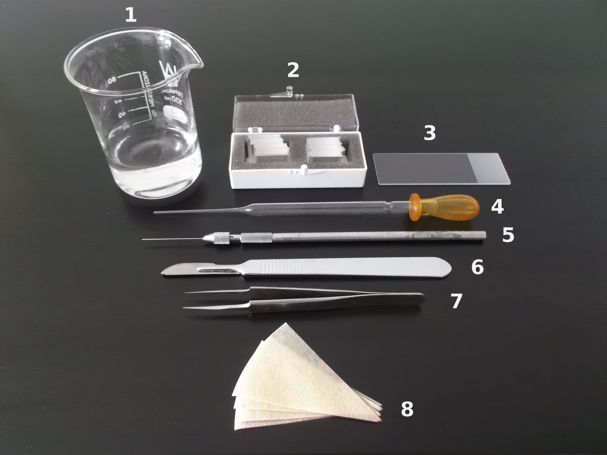
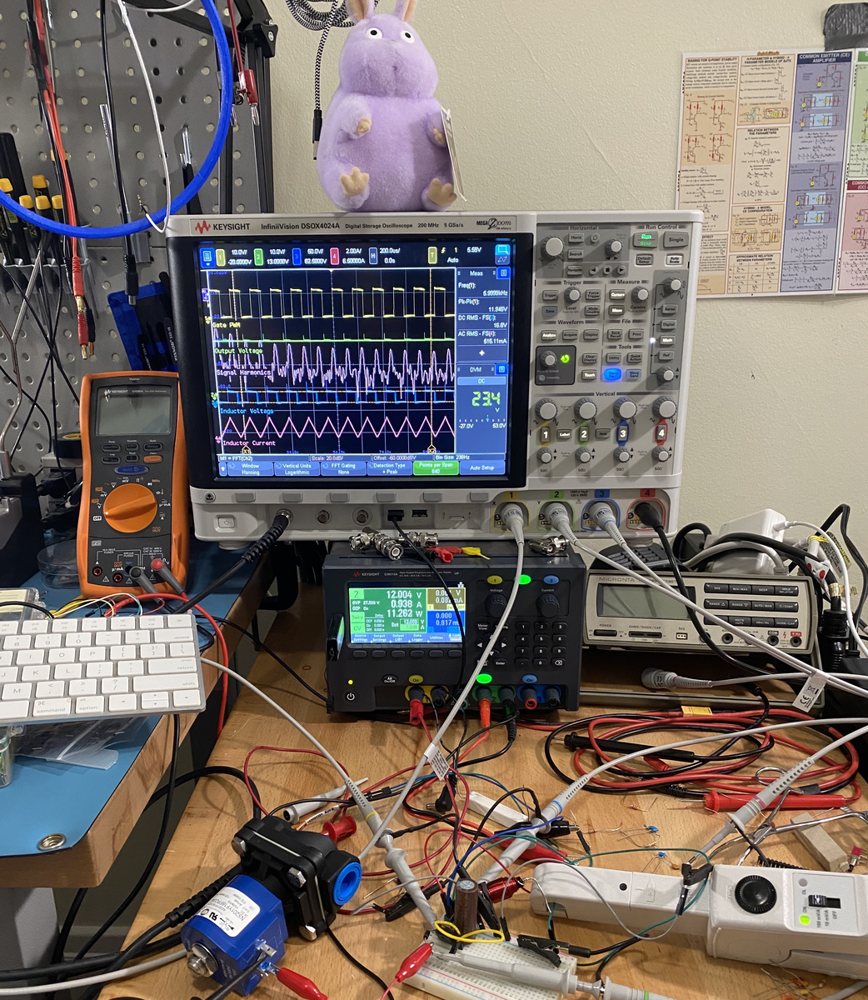
Empregabilidade em São Paulo. A possibilidade é diversificada. Região Metropolitana, Campinas, Sorocaba, São José dos Campos, ABC, Piracicaba e São Carlos concentram cadeias industriais e centros de P&D. Há funções com sensores, ensaios, calibração, qualidade, óptica, materiais, automação e suporte técnico. Normas técnicas e prática experimental documentada aumentam a empregabilidade.
Referência salarial (Brasil, 2026). Para especialista em instrumentação metrológica, o salário-base médio era de R$ 8.119 e o piso de referência, de R$ 5.593, em amostra pequena de 53 vínculos e jornada média de 42 horas. Técnicos, metrologistas, analistas de laboratório e engenheiros aparecem em classificações distintas, de modo que o título e o nível de responsabilidade alteram bastante a comparação.
Setor público, pesquisa e concursos de formação ampla
Há concursos que aceitam qualquer graduação e outros que reservam vagas a formações determinadas. Possibilidades podem aparecer em órgãos de estatística e pesquisa, agências reguladoras, institutos federais, universidades, carreiras policiais e fiscais, empresas públicas e bancos públicos.
Nomes como IBGE, Petrobras ou “auditor fiscal” não definem um único requisito permanente. Uma seleção pode ter cargos de formação ampla e outros exclusivos de Geologia, Engenharia, Estatística ou áreas específicas. A pergunta correta não é “essa instituição contrata físicos?”, mas:
- Qual é o cargo e a especialidade?
- Qual diploma o edital aceita?
- Há registro profissional, experiência ou pós-graduação exigidos?
- Quais são as atribuições reais e a lotação?
- O edital é atual e foi retificado?
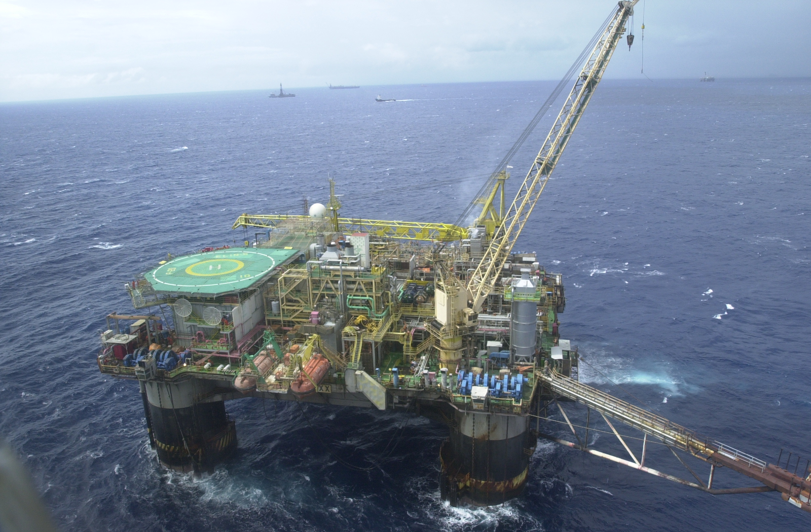
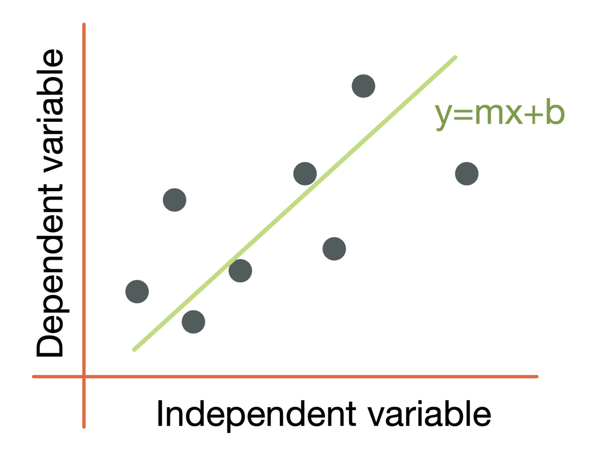
O físico tende a se adaptar bem a atividades de análise estatística e tratamento de dados: limpeza e integração de bases, controle de qualidade, amostragem, construção de indicadores, séries temporais, visualização e automação de rotinas. No IBGE, isso não significa que todo cargo aceite Física; alguns editais exigem formação específica, enquanto outros admitem qualquer graduação. A contribuição depende sempre das atribuições e dos requisitos do cargo concreto.
Empregabilidade em São Paulo. A possibilidade é periódica, pois depende da abertura de seleções. USP, Unesp, Unicamp, IFSP, institutos estaduais, prefeituras, órgãos federais e empresas públicas oferecem concursos ou seleções em ciclos irregulares. Fundação Seade e IBGE exemplificam o uso de dados; universidades e institutos contratam para pesquisa, laboratório, tecnologia e docência. Cada cargo deve ser analisado individualmente.
Auditoria fiscal, Inep e pesquisa científica
Auditor-Fiscal da Receita Federal. A carreira aceita graduação de nível superior conforme o edital vigente; não é uma carreira de Física, mas a formação quantitativa pode ajudar em raciocínio lógico, estatística, análise de grandes bases, identificação de anomalias, programação, modelagem de risco e leitura crítica de evidências. Para aprovação, contudo, é indispensável estudar as disciplinas próprias do concurso, como Direito Tributário, legislação aduaneira, contabilidade, auditoria e administração pública. Em 2026 foi autorizado novo concurso da Receita Federal, mas os requisitos definitivos dependem do edital.
Inep. O cargo de Pesquisador-Tecnologista em Informações e Avaliações Educacionais já apareceu em seleção com formação aceita em qualquer área do conhecimento. Suas atribuições incluem produção, análise e disseminação de dados estatísticos, estudos educacionais, avaliações em larga escala e sistemas de informação. Estatística, programação, modelagem, desenho de instrumentos, análise de incerteza e comunicação de resultados aproximam essa carreira das competências construídas em Física e em pesquisa educacional.
Pesquisador em Física e carreiras de Ciência e Tecnologia. Instituições como CNEN/IPEN, INPE, CBPF, universidades e institutos estaduais podem abrir vagas para pesquisador, tecnologista ou pesquisador científico. Nesses casos, o diploma de graduação raramente é suficiente: o edital pode exigir área específica, mestrado, doutorado, produção científica, projeto de pesquisa e defesa de memorial. No concurso da CNEN de 2025, por exemplo, o cargo de pesquisador exigia doutorado e oferecia vagas com possibilidade de lotação no IPEN, em São Paulo. Em 2026, o Instituto de Pesquisas Ambientais paulista anunciou vagas de Pesquisador Científico I.
Referências de remuneração inicial
Os valores abaixo são brutos e anteriores a descontos. Não constituem promessa salarial e não devem ser somados automaticamente a gratificações, bônus, auxílios ou retribuições por titulação. “Inicial” significa o primeiro padrão da carreira ou o valor publicado no edital indicado.
- Auditor-Fiscal da Receita Federal — R$ 22.921,71: vencimento básico inicial a partir de abril de 2026; eventual bônus segue regras próprias.
- Perito Criminal Federal — Física Forense — R$ 26.800,00: remuneração informada no edital da PF de 2025.
- Policial Rodoviário Federal — R$ 12.253,84: subsídio inicial da terceira classe, padrão I, a partir de maio de 2026.
- Perito Criminal da Polícia Civil de São Paulo — R$ 14.962,34: salário inicial informado na tabela oficial paulista consultada em novembro de 2026.
- Pesquisador-Tecnologista do Inep — R$ 9.446,18: vencimento básico inicial a partir de abril de 2026; pode haver retribuição por titulação.
- Cargos de nível superior do IBGE — R$ 8.266,34: vencimento básico inicial a partir de abril de 2026; gratificação de desempenho e titulação podem alterar o total.
- Pesquisador da CNEN — R$ 14.734,44: remuneração inicial divulgada para o concurso de 2025; o cargo de pesquisador exigia doutorado.
- Pesquisador Científico I do Estado de São Paulo — R$ 9.052,47: remuneração inicial anunciada para o concurso do Instituto de Pesquisas Ambientais em 2026.
No mercado CLT, o cargo genérico de físico apresentava salário-base médio de R$ 7.481 e piso de referência de R$ 3.710, em apenas 57 vínculos; no Estado de São Paulo, a média observada era R$ 8.765. Para pesquisador em Física, a média nacional era R$ 9.912 e o piso de referência, R$ 4.644, mas a amostra tinha somente 20 vínculos. Esses números não incluem bolsas acadêmicas e reforçam que pesquisa pública, universidade, empresa e pós-doutorado possuem regimes incomparáveis sem contexto.
Outras possibilidades
- divulgação e jornalismo científico;
- produção de material didático, museus e centros de ciência;
- educação corporativa e treinamento técnico;
- propriedade intelectual e apoio a patentes, com formação complementar;
- análise de políticas públicas e avaliação de impacto;
- empreendedorismo em educação, sensores, software ou energia;
- pesquisa acadêmica em Física, Ensino de Física ou áreas interdisciplinares.
A docência também pode ocorrer fora do Ensino Médio: educação profissional, cursos livres, museus, ambientes corporativos e ensino superior, respeitados os requisitos de cada instituição. Ampliar as opções não diminui a docência; mostra que ensinar é uma entre várias formas de usar a formação.
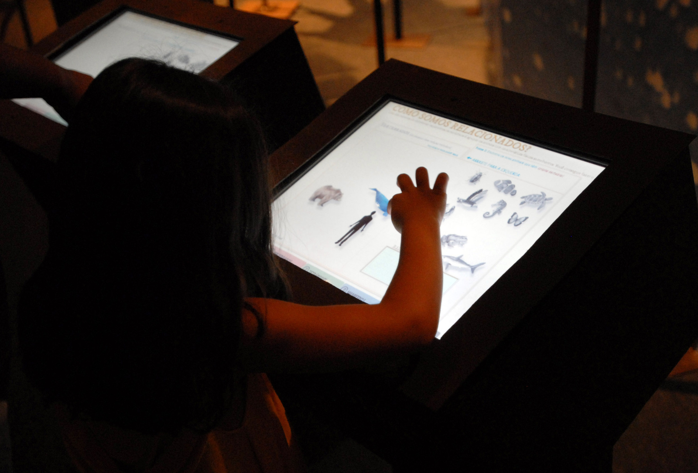
Empregabilidade em São Paulo. A possibilidade é menor, porém existente. Museu Catavento, centros de ciências, editoras, produtoras, organizações educacionais e projetos de extensão podem aproveitar comunicação científica, experimentação e design de atividades. Portfólio de textos, vídeos, exposições ou oficinas é particularmente importante.
Referência salarial (Brasil, 2026). Divulgação científica e educação não formal aparecem sob muitos cargos, portanto não há uma média única. Apenas como comparação do setor, museólogo apresentava salário-base médio de R$ 3.847 e piso de referência de R$ 2.853. Museólogo é profissão com formação e requisitos próprios: o dado não significa que o licenciado em Física possa ocupar esse cargo, mas ajuda a mostrar por que se deve pesquisar o título real da vaga — por exemplo, educador, mediador, roteirista ou analista de conteúdo.
As classificações de empregabilidade usadas nesta aula são qualitativas: “ampla” significa diversidade de setores, não garantia de contratação. Convém pesquisar oportunidades pelos conhecimentos exigidos — por exemplo, “Python”, “análise de sinais” ou “dosimetria” — e não apenas pela palavra “físico”. O mapa paulista também favorece combinações entre áreas, como Biofísica e análise de imagens ou geociências e ciência de dados.
Atividade: construir um mapa de carreira verificável
Em grupos, escolham uma área e preencham uma página com cinco blocos:
- Problema real: que tipo de pergunta essa área resolve?
- Competências já presentes: quais disciplinas ou experiências da licenciatura ajudam?
- Lacunas: o que ainda precisa ser aprendido ou praticado?
- Evidência: encontrem uma residência, vaga, edital, laboratório ou programa de pós-graduação real.
- Primeiro passo de 30 dias: proponham um estudo ou projeto pequeno, com uma entrega pública.
Ao apresentar, o grupo deve separar claramente fato, inferência e opinião. Se a fonte for um edital, registrar ano e cargo; se for uma vaga privada, registrar que os requisitos podem mudar.
Como ler uma vaga sem se enganar
Faça três marcações no texto: obrigatório, desejável e atividade cotidiana. Depois pergunte:
- o diploma é nominal ou aceita áreas correlatas?
- a experiência pode ser demonstrada por projeto?
- a ferramenta citada é central ou apenas desejável?
- a vaga exige atuação legalmente regulamentada?
- o trabalho combina com o cotidiano que eu quero, e não apenas com o título?
Não invente experiência nem esconda a modalidade do curso. Mostre a conexão: “usei regressão e validação neste projeto”, “medi e propaguei incertezas neste experimento”, “expliquei o resultado neste relatório”.
Síntese: um plano em quatro movimentos
- Escolher uma família de problemas, não apenas um cargo de prestígio.
- Mapear a distância entre o currículo atual e uma oportunidade real.
- Construir evidência por projeto, estágio, iniciação, extensão, residência ou pós-graduação.
- Verificar a regra de entrada na fonte oficial vigente.
A Licenciatura em Física oferece uma base quantitativa, experimental e comunicativa poderosa. A mobilidade profissional nasce quando essa base é tornada visível e conectada às necessidades de uma área. Em algumas rotas, um bom portfólio faz a ponte; em outras, será necessária formação clínica, certificação, registro ou aprovação em concurso.
Vídeos recomendados
Computação, dados e inteligência artificial
O curso oferece uma visão universitária das potencialidades e limitações da IA. Para esta aula, pode-se selecionar a introdução e discutir quais partes dependem de matemática, dados, programação e avaliação crítica.
Física Médica
Uma introdução visual ao papel da Física Médica em um serviço de radioterapia. Deve ser complementada pelas normas e pelos percursos formativos oficiais.
Física forense e perícia
O workshop aproxima físicos, peritos e estudantes e apresenta microscopia, resíduos de disparo e microvestígios. Para uma aula mais curta, podem ser selecionados no programa os trechos sobre atividades do perito e projetos.
A entrevista conecta conceitos de energia e velocidade com situações de perícia e ajuda a discutir como um conteúdo de graduação reaparece em um problema profissional.
O vídeo institucional apresenta atividades e ambientes de atuação da Polícia Rodoviária Federal. Ele complementa os vídeos de perícia ao mostrar uma carreira policial de formação ampla: o licenciado em Física pode concorrer quando cumpre o requisito de graduação e as demais exigências, mas ingressa para exercer as atribuições gerais da PRF, não em um cargo separado de físico.
Econofísica e finanças quantitativas
O vídeo, em inglês, introduz a conexão entre Física Estatística, sistemas complexos e fenômenos econômicos. A exibição deve ser acompanhada da ressalva de que econofísica e finanças quantitativas têm objetivos relacionados, mas não idênticos.
Geofísica e ciências da Terra
O vídeo apresenta a profissão e suas aplicações. Ele também permite comparar uma graduação específica em Geofísica com as pontes que um licenciado em Física pode construir por dados, pesquisa ou pós-graduação.
Biofísica
Uma apresentação geral para identificar como conceitos físicos são usados no estudo dos seres vivos. Pode orientar um mapa inicial das subáreas e das disciplinas que formam a ponte entre Física e Biologia.
O vídeo introduz uma técnica de bioimagem na qual óptica, interação da radiação com a matéria, instrumentação e preparação biológica aparecem juntas. É uma aplicação concreta para discutir possíveis funções em pesquisa e tecnologia.
Indústria, instrumentação e metrologia
O episódio explica por que padrões de medida, rastreabilidade e ciência de ponta sustentam atividades industriais e cotidianas. É uma boa ponte entre o laboratório da graduação e funções técnicas fora da escola.
Setor público e concursos
O vídeo oficial mostra por que coleta, organização e análise de dados públicos têm impacto social. Ele permite discutir funções de campo, estatística, cartografia, tecnologia e comunicação. Para concursos, porém, nenhum vídeo substitui o edital vigente e suas retificações.
Divulgação científica, museus e produção de conteúdo
Pesquisadores da Fiocruz apresentam um estudo sobre os divulgadores responsáveis por canais brasileiros de ciência. O vídeo ajuda a tratar divulgação científica como campo que envolve pesquisa, roteiro, linguagem, ética, produção audiovisual e relação com diferentes públicos.
Questões de revisão e reflexão
- Quais competências da Licenciatura em Física são transferíveis para outras áreas?
- Por que “ter potencial para atuar” não é o mesmo que estar legalmente habilitado?
- Que evidências um projeto de ciência de dados precisa apresentar além de uma boa acurácia?
- Qual formação complementar pode aparecer em uma trajetória de Física Médica?
- Por que um laudo pericial deve comunicar incerteza e limites?
- Qual é a diferença entre econofísica e uma promessa de prever o mercado?
- Como sensoriamento remoto difere de “geolocalização” em sentido amplo?
- Que cinco itens devem ser conferidos antes de estudar para um concurso?
- Escolha uma área e proponha um projeto de portfólio realizável em 30 dias.
- Em que a Biofísica difere da Física Médica e quais conhecimentos complementares aparecem nessa transição?
Imagens de uso livre
As três ilustrações iniciais foram elaboradas para o próprio material e podem ser reutilizadas com atribuição a Jefferson Rodrigues de Oliveira, sob licença CC BY 4.0. As dezoito imagens complementares vieram do Wikimedia Commons. Cada legenda informa autor, página do arquivo e licença específica: domínio público, CC0, CC BY ou CC BY-SA. A licença deve acompanhar qualquer reutilização; obras CC BY-SA exigem ainda o compartilhamento da adaptação sob licença compatível.
Páginas de origem e licenciamento:
- Dados e saúde: fluxo de machine learning, ciência de dados e IA, radioterapia e PET/CT;
- Perícia, economia e geociências: balística, investigação de campo, operação da PRF, passeio aleatório, pregão da B3, levantamento sísmico e camadas de SIG;
- Biofísica e instrumentação: potencial de membrana, microscopia de fluorescência, equipamentos de laboratório e osciloscópio digital;
- Setor público e divulgação: plataforma de petróleo, regressão estatística e exposição científica.


.svg){kind=link}


_1.jpg){kind=link}


Os vídeos são apenas incorporados ou vinculados ao YouTube; suas miniaturas e conteúdos permanecem sob os termos dos respectivos autores e da plataforma.
Referências
BRASIL. COMISSÃO NACIONAL DE ENERGIA NUCLEAR (CNEN). Norma CNEN NN 7.01: requisitos para certificação da qualificação de supervisores de proteção radiológica. Documento oficial. Acesso em: 3 nov. 2026.
BRASIL. INSTITUTO NACIONAL DE CÂNCER (INCA). Residência em Física Médica: apresentação. Informa ênfases, atividades e pré-requisito de licenciatura ou bacharelado. Página oficial. Acesso em: 3 nov. 2026.
BRASIL. POLÍCIA FEDERAL. Edital nº 1 – PF – Policial, de 20 de maio de 2025. Inclui Perito Criminal Federal, Área 16: Física Forense. Edital. Acesso em: 3 nov. 2026.
BRASIL. POLÍCIA FEDERAL. Dúvidas frequentes: graduação para o cargo de Perito Criminal Federal. Página oficial. Acesso em: 3 nov. 2026.
BRASIL. POLÍCIA RODOVIÁRIA FEDERAL. Dúvidas sobre concurso público. Página oficial. Acesso em: 3 nov. 2026.
BRASIL. RECEITA FEDERAL. Concurso público para a Receita Federal 2026. Informa a autorização de vagas para Auditor-Fiscal e Analista-Tributário. Página oficial. Acesso em: 4 nov. 2026.
BRASIL. Lei nº 15.367, de 30 de março de 2026. Atualiza tabelas remuneratórias, incluindo Auditor-Fiscal da Receita Federal. Texto legal e anexos. Acesso em: 4 nov. 2026.
BRASIL. INSTITUTO NACIONAL DE ESTUDOS E PESQUISAS EDUCACIONAIS ANÍSIO TEIXEIRA. Cargo de Pesquisador-Tecnologista em Informações e Avaliações Educacionais. Descrição e requisitos publicados no CPNU. Edital oficial. Acesso em: 4 nov. 2026.
BRASIL. PORTAL DO SERVIDOR. Tabela de remuneração dos servidores públicos federais civis e dos ex-territórios. Cadernos remuneratórios de 2026. Página oficial. Acesso em: 4 nov. 2026.
BRASIL. COMISSÃO NACIONAL DE ENERGIA NUCLEAR. Concurso público de 2025. Cargos de pesquisador, tecnologista, analista e técnico. Página oficial. Acesso em: 4 nov. 2026.
SÃO PAULO (Estado). SECRETARIA DE GESTÃO E GOVERNO DIGITAL. Tabela da carreira policial: Perito Criminal de 3ª Classe. Página oficial. Acesso em: 4 nov. 2026.
SÃO PAULO (Estado). INSTITUTO DE PESQUISAS AMBIENTAIS. Novo concurso para Pesquisador Científico I. Página oficial. Acesso em: 4 nov. 2026.
PORTAL SALÁRIO. Pesquisas salariais por ocupação, com dados do Novo CAGED: cientista de dados, físico médico, analista de riscos, analista financeiro, geofísico, biotecnologista, especialista em instrumentação metrológica, físico, pesquisador em Física e museólogo. Acesso em: 4 nov. 2026.
BRASIL. Lei nº 13.691, de 10 de julho de 2018. Dispõe sobre o exercício da profissão de físico. Planalto. Acesso em: 4 nov. 2026.
CENTRO NACIONAL DE MONITORAMENTO E ALERTAS DE DESASTRES NATURAIS (CEMADEN). A pesquisa. Apresenta linhas em meteorologia, geologia, sensoriamento remoto e modelagem. Página oficial. Acesso em: 4 nov. 2026.
INSTITUTO NACIONAL DE PESQUISAS ESPACIAIS (INPE). Pesquisa aplicada e desenvolvimento tecnológico. Laboratórios de materiais, sensores, plasma, computação e matemática aplicada em São José dos Campos. Página oficial. Acesso em: 4 nov. 2026.
SÃO PAULO (Estado). TRIBUNAL DE JUSTIÇA. Mandado de Segurança Coletivo nº 1061470-50.2023.8.26.0053. 11ª Vara de Fazenda Pública, sentença de 4 dez. 2023. Cópia integral disponibilizada pela SBF. Acesso em: 4 nov. 2026.
SÃO PAULO (Estado). TRIBUNAL DE JUSTIÇA. Apelação Cível nº 1000435-02.2017.8.26.0053. 3ª Câmara de Direito Público, j. 4 dez. 2018; e Apelação Cível nº 1047606-18.2018.8.26.0053. 6ª Câmara de Direito Público, j. 18 mar. 2019. Precedentes citados na sentença do processo nº 1061470-50.2023.8.26.0053.
INSTITUTO DE FÍSICA DA UNIVERSIDADE DE SÃO PAULO (IFUSP). 1º Workshop de Física Aplicada à Ciência Forense: técnicas avançadas para investigação criminal. 2025. Página e programa. Acesso em: 3 nov. 2026.
INSTITUTO DE CIÊNCIAS MATEMÁTICAS E DE COMPUTAÇÃO DA UNIVERSIDADE DE SÃO PAULO (ICMC-USP). Fundamentos de Aprendizado de Máquina e Ciência de Dados para Inteligência Artificial. Página do curso. Acesso em: 3 nov. 2026.
MANTEGNA, Rosario N.; STANLEY, H. Eugene. An introduction to econophysics: correlations and complexity in finance. Cambridge: Cambridge University Press, 2000.
PRESS, William H. et al. Numerical recipes: the art of scientific computing. 3. ed. Cambridge: Cambridge University Press, 2007.